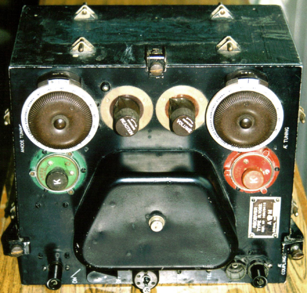
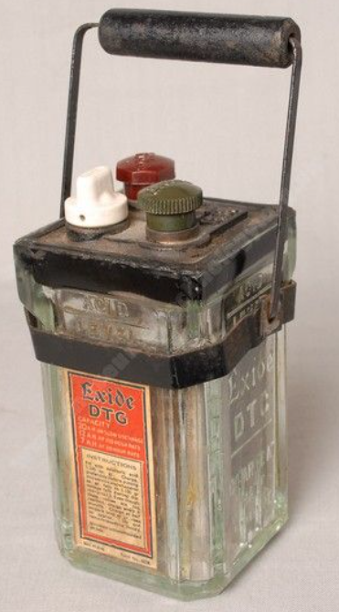
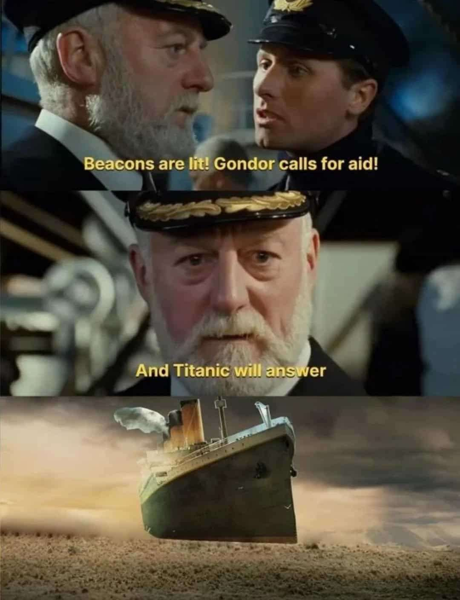
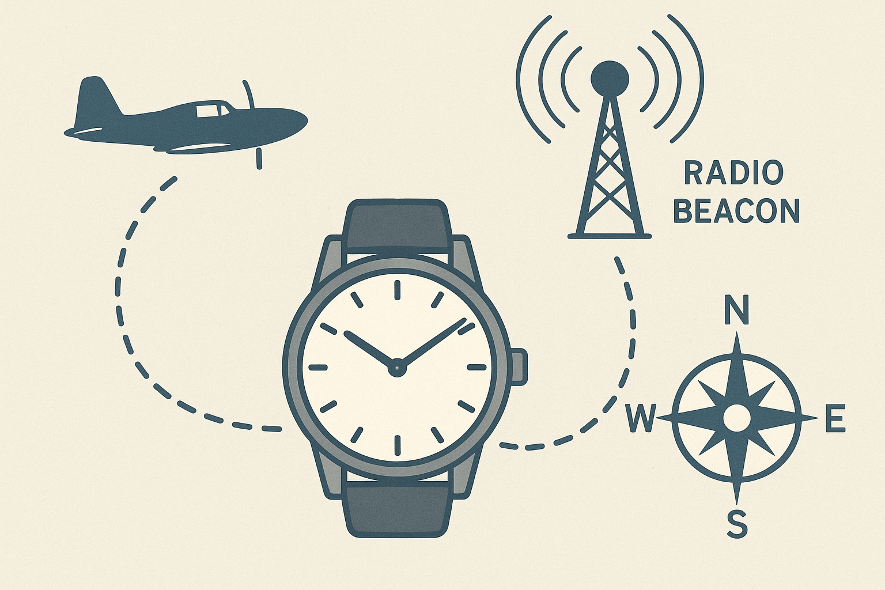

WW2 중 항모에서의 야간 작전 (26) - 항공모함의 등대
게시: 2025-08-14T08:56:10+09:00
<간단한데 섬세한 장비> 지지난 편에서 소드피쉬의 조종사와 항법사가 서로 이야기할 때 인터콤이 아니라 고무관으로 만들어진 Gosport tube를 이용하여 대화했다는 이야기를 했는데, 왜 굳이 그랬을까? 그리고 타란토에서 200km 이상 떨어진 먼 바다까지 나와서도 무선 침묵을 지켰을까? 이유는 무척 간단. 당시 사용된 Swordfish 초기형에는 모르스 부호를 타전하는 key-in 방식의 타전기 이외에는, 아예 음성 무전기가 안 달려 있었음. 사실 그래서 소드피쉬가 3인승 폭격기였던 것. 즉, 조종사, 항법사, 그리고 TAG (Telegraphist Air Gunner). 뚜-뚜우-뚜 하는 방식으로 모르스 부호를 타전하고 수신하려면 한 명이 더 필요했음. 그러나 항상 무전을 주고 받는 것도 아니고 또 항상 기관총을 쓸 일도 없었으므로 무전병에게 기총수 역할도 맡겼던 것. WW2 초기에 로열네이비 항공대 (Fleet Air Arm)에서 사용하던 표준 무전기는 GP (General Purpose) Wireless Telegraphy 혹은 그냥 jeep W/T 라고 불렸는데, 여기엔 1082 Receiver, 1083 Transmitter 그리고 R1110 beacon receiver가 통합되어 있었음. 이 구닥다리식 무전기도 당연히 전원을 필요로 했는데, 소드피쉬에는 이 무전기를 위한 전력선이 따로 없었음. 그래서 어떻게 했을까? 자동차에 사용되는 것 같은 납축전지를 사용했음. 자동차에서는 그런 납축전지와 자동차 엔진에 붙은 alternator (발전기)가 연결되어 있으니 별도로 충전할 필요가 없었지만, 소드피쉬에는 그런 것이 없다보니... TAG, 즉 무전병 겸 기총수가 알아서 전날 밤 충전시킨 뒤 탑승할 때 들고 탄 뒤 직접 연결해야 했음.

(이것이 GP Wireless Telegraphy. 기술적으로는 굉장히 단순한 장비이지만, 저걸 운용하는 사람에겐 매우 복잡하고 섬세한 장비. 저 장비에 보이는 초록색과 붉은색의 plug들의 조합을 잘 맞춰야 원하는 주파수가 나왔는데, 항상 같은 주파수를 쓸 경우 적군이 도청하기 쉬우니까 비행할 때마다 다른 주파수를 쓰도록 조절했는데, 항모에서 지정해준 주파수를 맞추기 위해서는 딱 맞는 조합을 찾아낼 때까지 초록/빨강의 20쌍 조합을 일일이 끼워 맞추며 테스트해야 했다고.)

(이건 WW2 때 사용된 휴대용 납축전지. 다만 이게 소드피쉬에 들어갔던 형태의 것인지는 불확실.)
(이건 WW2 당시 영국해군에서 사용한 납축전지 세트. 12개가 하나의 세트인데, 저 납축전지 용기들은 유리로 되어 있음.) <ChatGPT 너무 믿지 말라> 그런데 위에서 언급한 저 jeep 무전기의 1082 수신기, 1083 송신기는 뭔지 짐작이 가는데, R1110 beacon 수신기란 무엇일까? Beacon이라는 것은 과거 봉화를 뜻하는 단어로서, 등대 등에서 보내는 신호도 beacon이라고 하고, 항공모함에서 함재기가 항모를 찾아올 수 있도록 발신하는 신호도 beacon이라고 함. 즉, 저 beacon 수신기를 이용하여 함재기들이 자신의 항공모함을 찾아갈 수 있는 것.

(가령 반지의 제왕에서, 위기에 처한 곤도르가 로한에게 보내는 구원 요청 봉화 신호도 beacon임. 이건 로한의 왕 역할로 나왔던 배우가 영화 타이타닉의 선장 역할도 맡았기 때문에 나온 유머짤. "봉화가 켜졌습니다! 곤도르가 구원을 요청하고 있습니다!" "...그리고 타이타닉은 그에 응할 것이다") 함재기에 beacon 수신기가 있다는 것은 항모에는 beacon 송신기가 있어서 신호를 쏘아준다는 뜻. 그런데 무선 침묵 아니었던가? 그렇게 아군 함재기들이 beacon 신호를 받고 항모를 찾아낼 수 있다는 것은 적 폭격기들도 그 신호를 추적하여 항모에 날아들 수 있다는 뜻인데?? 당연히 그런 위험이 있었으므로 항모가 항상 beacon을 켜고 다니지는 않았고, 먼 곳까지 임무 비행을 나간 함재기가 있을 때만 켜긴 했음. 그리고 그 beacon 신호는 1분에 1번만 수신될 수 있었음. 하지만 그래도 이상함. 지속적으로 발신되는 전파 신호라면 loop 안테나를 이용하여 그 발신 방향을 추적하는 것이 가능함. (고리형 안테나를 이용한 전파 발신원 방향 탐지에 대해서는 https://nasica1.tistory.com/804 참조.) 하지만 1분에 한 번만 잠깐 수신되는 신호라면 loop 안테나를 이용한다고 해도 그것만으로 발신 방향을 찾는 것은 매우 어려울 텐데? 타란토 항구를 성공적으로 습격하고 HMS Illustrious로 귀환하던 소드피쉬들이 깜깜한 어둠과 무선 침묵 속에서 어떻게 항모를 찾을 수 있었는지에 대해서는 (이 시리즈 전체에서 절대적인 역할을 하고 있는) 'Armoured Aircraft Carriers' 사이트에서는 이렇게 설명. As he flew through the darkness more than five hours after being launched, the minute-hand of the watch worn by his navigator pointed the way to safety. Synchronised with a rotating radio beacon aboard the carrier, every time it pinged the ship would be in the direction the minute-hand was facing if 12 O'clock was considered to be north. ChatGPT에게 직역을 시켜보면 아래와 같음. "그가 발진한 지 5시간이 넘도록 어둠 속을 비행하고 있을 때, 항법사가 착용한 손목시계의 분침이 안전한 귀환 방향을 가리키고 있었다. 항공모함에 설치된 회전식 무선 표지기(radio beacon)와 동기화된 이 시계는, 표지기가 ‘핑’ 신호를 낼 때마다, 12시 방향을 북쪽으로 가정하면, 분침이 가리키는 방향이 곧 함정이 있는 방향이었다." 이게 대체 무슨 소리인지 이해가 가시는지? 이에 대해 역시 ChatGPT에게 기술적 의미를 설명해달라고 하니 아래와 같이 나옴. 기술적 의미 설명: 이 문장은 WW2 시절 항공모함 함재기 귀환 유도 기술 중 하나를 설명하는 것입니다. 핵심은 회전식 무선 표지기(rotating radio beacon) 와 시계 분침의 동기화입니다. 1. 회전식 무선 표지기(Rotating Radio Beacon) 항공모함에 장착된 안테나가 일정 속도로 회전하면서 특정 주기마다(예: 1회전당 1분) 강한 신호 “핑”을 송출합니다. 이 신호는 특정 방향(예: 북쪽부터 시작하여 시계방향으로)일 때만 강하게 들리기 때문에, 신호가 나온 순간의 안테나 방위각을 알 수 있습니다. 2. 시계 분침과 동기화 함재기 출격 전에 항모의 표지기 회전 속도와 손목시계 분침을 ‘같은 위상’으로 맞춰 둡니다. 예: 표지기가 북쪽을 향할 때 분침이 12시를 가리키도록 맞춤. 이후 표지기가 회전할 때마다 신호가 나오면, 그 순간의 분침 각도가 곧 항모가 있는 방위각이 됩니다. 3. 조종사/항법사의 활용 방식 12시를 ‘북쪽’으로 가정하고, 분침이 가리키는 방향을 나침반 위의 방위로 변환하면 항모 위치를 알 수 있음. 예: 신호가 나올 때 분침이 4시 방향이면, 항모는 남동쪽에 있다는 뜻. 즉, 이 방법은 함재기에 무거운 방향탐지장치 없이도, 단순한 시계와 무선수신기만으로 항모 방향을 알 수 있게 해주는 저비용 귀환 항법입니다. 오늘날로 치면 ADF(Automatic Direction Finder) 원리를 단순화한 수동형 버전이라고 할 수 있죠. 이 설명 역시 읽어봐도 무슨 소리인지 전혀 이해가 가지 않음. 평범한 손목시계의 분침은 그냥 시간을 가리킬 뿐인데, 가령 새벽 2시 40분에 시계의 12시 방향을 북쪽으로 맞추면 (그러니까 2시 40분이면 분침은 시계판의 8 방향), 항모는 무조건 남서쪽에 있다는 소리인데, 그게 말이 되나? 이걸 ChatGPT에게 그림으로 설명해달라니까 아래와 같은 그림이 나옴.

그러니까, ChatGPT도 자신이 뭔 소리를 하는 것인지 전혀 이해를 못하는 것으로 보임. 대체 진실은 무엇일까? 분량 실패로 다음 주로 이어짐.